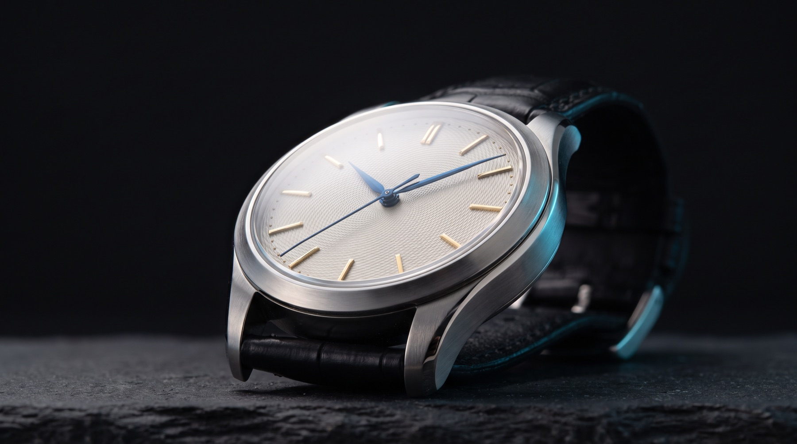
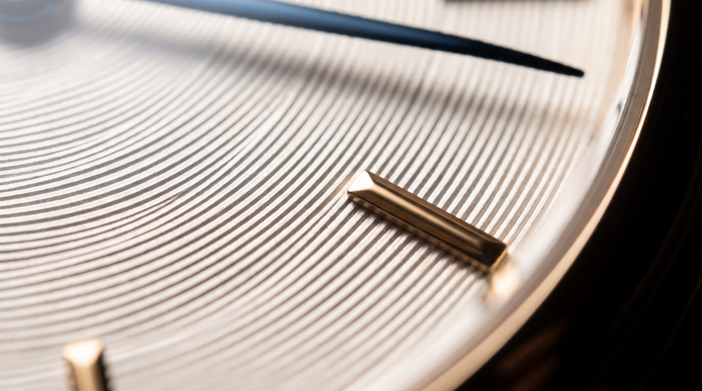
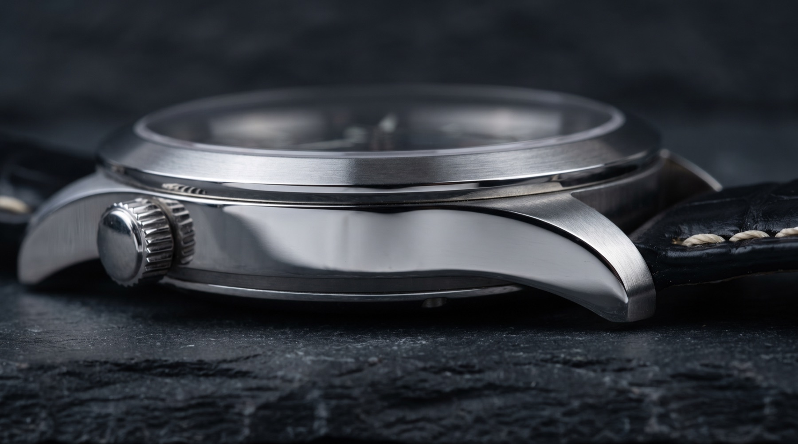
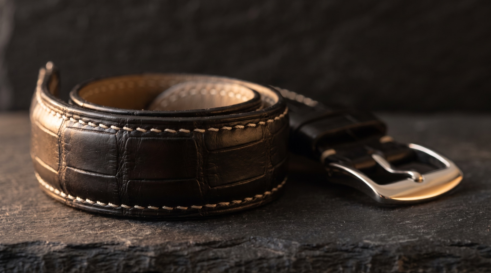

The Collection
Three dials.
Nothing else changes.
One calibre. One case. The dial is the whole difference between the three references, and it is difference enough.
Nine watches leave the building each year: four Bianco, three Notte, two Terra. That number is not a marketing device. It is what four watchmakers can do properly in twelve months, and it has not changed since the first watch was cased.

Reference 01
Nine Bianco
The first dial we made, and still the one most people ask for.
Bone white, hand-turned on a rose engine in fine concentric circles. In flat light it reads as a plain white dial. Tilt it and the engine turning appears, then disappears again. That is the whole idea.
| Dial | Bone-white guilloché, hand-turned |
|---|---|
| Indices | Applied gold, polished |
| Hands | Blued steel |
| Case | 38.5mm steel, brushed with polished flanks |
| Strap | Black alligator, steel pin buckle |
| Made | Four a year |
| Price | CHF 42,000 |
Reference 02
Nine Notte
The dial that does nothing at all, deliberately.
A matte grained black, even across the whole surface, with no texture that competes with the hands. It is the hardest of the three to make well: any unevenness in the graining shows immediately under the sapphire.
| Dial | Grained near-black, matte |
|---|---|
| Indices | Applied gold, polished |
| Hands | Blued steel |
| Case | 38.5mm steel, brushed with polished flanks |
| Strap | Black alligator, steel pin buckle |
| Made | Three a year |
| Price | CHF 44,000 |
Reference 03
Nine Terra
Guilloché under translucent lacquer, in the only colour we make.
Six coats of deep teal lacquer over the same engine turning as the Bianco, each coat polished back before the next. The pattern stays visible through the colour. The crown is gold; on this reference alone, so is the buckle.
| Dial | Deep teal translucent lacquer over guilloché |
|---|---|
| Indices | Applied gold, polished |
| Hands | Blued steel |
| Case | 38.5mm steel, polished flanks, gold crown |
| Strap | Teal alligator, gold pin buckle |
| Made | Two a year |
| Price | CHF 46,000 |

Shared across all three
The case
Cut from a single billet of 316L, then finished by hand. Brushed top surfaces, polished flanks, and the line where they meet — the part you feel before you read it.
38.5mm across and 9.1mm thick, which is small by current habit and correct for a hand-wound watch. It sits under a cuff.
| Diameter | 38.5 mm |
|---|---|
| Thickness | 9.1 mm |
| Lug to lug | 45 mm |
| Lug width | 20 mm |
| Material | 316L stainless steel |
| Crystal | Domed sapphire, double anti-reflective |
| Water resistance | 30 m |

Most years, the nine are spoken for by March.
There is no paid priority list. Write to us, or visit one of four boutiques.